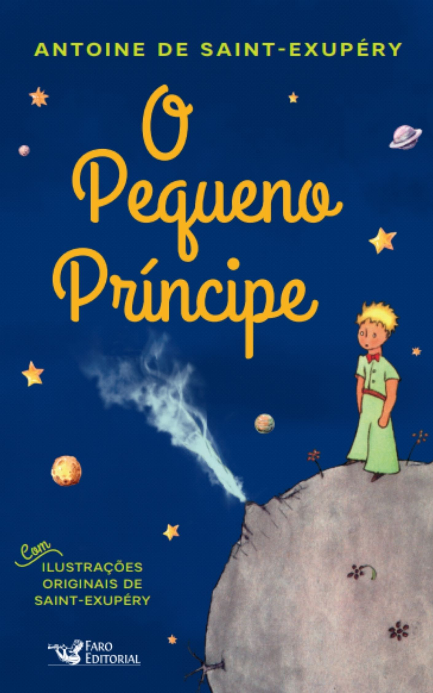
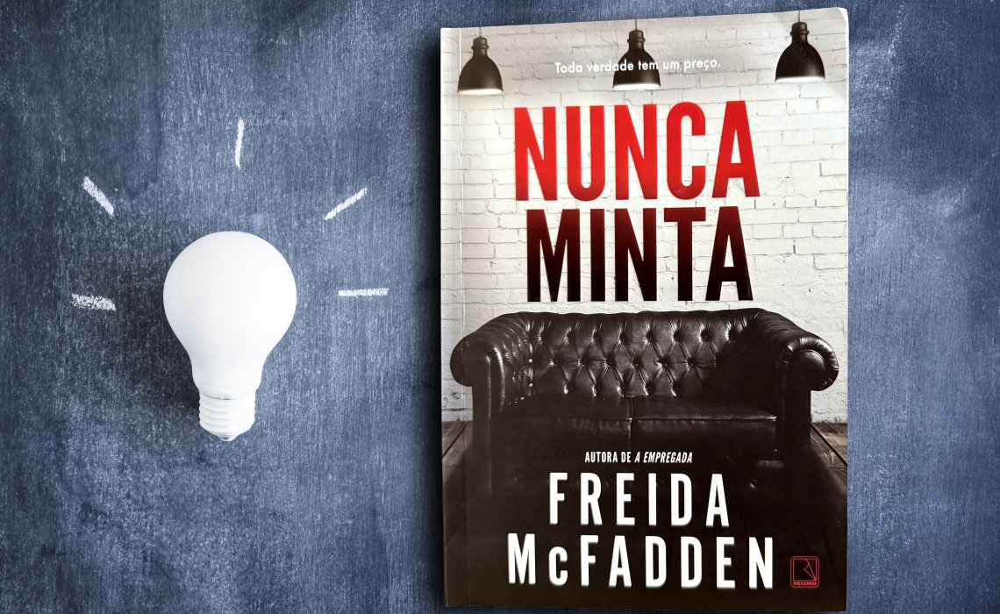

O Pequeno Príncipe
R$ 39,90
O pequeno príncipe é um famoso livro da literatura infantil europeia. Narra acontecimentos vividos por um menino originário do asteroide B 612. Após a queda de um avião no deserto do Saara, o piloto faz amizade com essa sábia criança, que consegue ver o que os adultos são incapazes. A obra possui tempo cronológico e um narrador personagem. Apresenta personagens solitários em busca de um sentido para as suas existências. Publicado, pela primeira vez, em 1943, esse livro apresenta elementos fantásticos e procura valorizar as coisas simples da vida."
Acessar livro
Nunca Minta
R$ 34,90
Freida McFadden é um thriller psicológico que te prende do início ao fim, conduzindo o leitor por uma trama intricada repleta de suspense e reviravoltas inesperadas. A história gira em torno de Tricia e Ethan, um jovem casal que, ao adquirir uma casa antiga, se depara com um passado obscuro e perturbador. A casa, que pertencia à renomada psiquiatra Dr. Adrienne Hale, esconde um segredo sombrio: uma sala secreta repleta de fitas de áudio que documentam as sessões de terapia da doutora."
Acessar livro
Mais Esperto que o Diabo
R$ 32,90
No livro narra-se uma entrevista entre o Senhor Humano e o Diabo, autodenominado "Sua Majestade". O livro ensina a superar medos e limitações e aproveitar a adversidade para descobrir um benefício equivalente.[1] Entrevistando o Diabo, o autor identifica os maiores obstáculos para o desenvolvimento humano: medo, procrastinação, raiva, ciúmes, que são tidos como ferramentas do diabo para a alienação humana.
Acessar livro
O Poder do Hábito
R$ 29,90
O loop do hábito é um padrão neurológico que governa qualquer hábito. Consiste em três elementos: uma deixa, uma rotina e uma recompensa. Entender esses componentes pode ajudar a entender como mudar os maus hábitos ou formar bons. O loop de hábitos sempre é iniciado com uma deixa, um gatilho que transfere seu cérebro para um modo que determina automaticamente qual hábito usar. O coração do hábito é uma rotina mental, emocional ou física. Finalmente, há uma recompensa, que ajuda seu cérebro a determinar se esse loop em particular vale a pena ser lembrado para o futuro.
Acessar livro